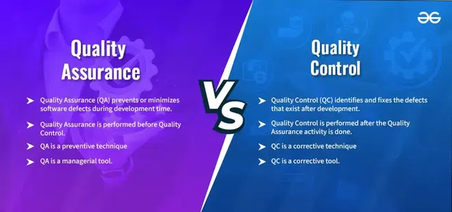

8.1 Quality Assurance (overview)
Quality assurance (QA) is a proactive, process-oriented discipline that ensures quality is built into products from the start rather than inspected in at the end. It encompasses the policies, procedures, and systematic activities needed to provide confidence that a product or service will satisfy quality requirements. In software engineering, QA is closely related to — but broader than — testing and inspection alone.
The general concept of software quality is introduced in §1.12 Software Quality. This section focuses on how organisations manage and assure that quality through evolving quality management approaches.
Evolution of quality management
Quality management has evolved through four major stages, each building on the previous one:

- Inspection: Products are examined directly after production to detect visible defects — a basic, reactive form of quality checking with no systematic process improvement.
- Quality Control (QC): Defective items are identified through testing and inspection, and the root causes of defects are traced and corrected so the same mistakes do not repeat immediately.
- Quality Assurance (QA): Defined processes, standards, and preventive measures are established so that good-quality products are built systematically, including security and compliance checks before defects reach the customer.
- Total Quality Management (TQM): All organisational procedures are continuously measured and improved; quality becomes the responsibility of every employee, not just a dedicated QC team, and process measurements drive ongoing refinement.
- Each stage does not replace the previous one — modern organisations still inspect and test (QC) while also running QA and TQM programmes on top.
- In software, moving from pure inspection (code review only at the end) to QA means defining standards, reviews, and metrics at every SDLC phase.
What is Quality Assurance?
- QA is defined as an activity that ensures the approaches, techniques, methods, and processes designed for a project are implemented correctly.
- Its primary aim is to prevent defects by improving the process, not merely to find defects after they appear in the product.
- QA recognises flaws in the process itself — if the development method is weak, even skilled programmers will produce unreliable software.
- QA is completed before Quality Control in the logical sequence: first ensure the process is sound, then verify the product against that process.
- QA is a proactive, preventive, process-oriented discipline that runs throughout the Software Development Life Cycle (SDLC).
Characteristics of Quality Assurance
- Process-oriented: QA places strong emphasis on creating and following reliable procedures and standards so that product quality is consistent across projects.
- Proactive and preventive: QA tries to stop errors before they are coded or released, rather than waiting for testers to discover them later.
- Continuous improvement: QA includes regular assessment of processes and feedback loops so that methods improve over time — this bridges QA toward TQM.
- Organisation-wide involvement: All team members participate in QA activities such as reviews and standards compliance, not only a separate QA department.
- Statistical Process Control (SPC): QA often uses statistical techniques to monitor process performance and detect trends before they become serious quality failures.
Quality Assurance vs Quality Control

| Aspect | Quality Assurance (QA) | Quality Control (QC) |
|---|---|---|
| Orientation | Process-oriented — focuses on how the product is built | Product-oriented — focuses on the finished product |
| Nature | Preventive — stops defects before they occur | Corrective — finds and fixes defects after they occur |
| Timing | Applied throughout the lifecycle, before and during development | Applied after development activities, typically during testing |
| Responsibility | Entire team and organisation; QA group sets standards | Testing/inspection team verifies the product against specifications |
| Activities | Process definition, reviews, audits, standards compliance, training | Testing, inspection, defect logging, rework |
| Goal | Build quality in through proper processes | Identify and remove defects from the product |
| Program execution | QA does not require executing the program — reviews and audits suffice | QC typically requires running the software (dynamic testing) |
| Lifecycle scope | Covers the entire SDLC — requirements through maintenance | Concentrated in the Software Testing Life Cycle (STLC) and delivery phases |
| Statistical technique | Statistical Process Control (SPC) — monitors process variation | Statistical Quality Control (SQC) — monitors product defect rates |
| Software example | Verification — design review, code inspection, walkthrough of SRS | Validation — system testing, acceptance testing, beta testing |
| Output | Process compliance evidence, improved methods, fewer escaped defects | Defect reports, test results, corrected product builds |
- QA comes before QC in the quality lifecycle — if processes are well defined and followed (QA), fewer defects reach the testing stage (QC).
- QA is not a substitute for QC; both are needed. QA reduces the volume of defects; QC catches those that still escape.
- In software terms, verification is a QA activity (checking that the product is built correctly against specifications), while validation is a QC activity (checking that the right product was built for user needs). These are covered in detail in §8.3 Verification & Validation.
QA in the software context
- Software QA applies systematic, planned activities to ensure that software development and maintenance processes conform to agreed standards and produce fit-for-purpose products.
- QA activities include establishing quality standards, conducting process audits, overseeing reviews, and ensuring that corrective actions are taken when deviations are found.
- Unlike manufacturing QC (which inspects physical units on a production line), software QC relies heavily on reviews, static analysis, and dynamic testing because software cannot be "sampled" in the same way as physical goods.
- Software is intangible — there is no visible product until late in the project, so QA must use documentation, metrics, and formal reviews to track progress objectively.
- Software Quality Assurance (SQA) is the specialised application of QA principles to software projects — covered in §8.2 Software Quality Assurance.
Software testing vs Quality Assurance
- Software testing focuses on finding defects in the product by executing code and comparing results against expected behaviour — it is primarily a QC activity.
- Quality Assurance focuses on improving the process so that fewer defects are introduced in the first place — it is broader than testing alone.
- Testing is a subset of the overall QA programme; SQA ensures that testing itself is properly planned, resourced, and conducted.
- Testing produces a list of defects; QA produces confidence that processes were followed and that the overall quality system is working.
- An organisation can run many tests and still fail on quality if its requirements process, design reviews, or change control are weak — QA addresses those upstream gaps.
Why Quality Assurance matters in software projects
- Defects found late in the SDLC cost far more to fix than defects caught during requirements or design reviews — QA pushes detection earlier.
- Customers and contracting organisations increasingly require evidence of a formal QA programme before awarding projects (especially in government and safety-critical domains).
- QA provides traceability — documented evidence that each requirement was reviewed, tested, and signed off, which is essential for audits and maintenance.
- Continuous process improvement under QA reduces rework, schedule overruns, and post-release maintenance costs over multiple projects.
- Without QA, teams depend on individual heroics; with QA, success becomes repeatable even when staff change.
Key distinctions for exams
- QA = process focus, preventive, proactive; QC = product focus, detective, reactive.
- Verification ("Are we building the product right?") aligns with QA; validation ("Are we building the right product?") aligns with QC.
- TQM extends QA by making continuous improvement an organisation-wide culture, not just a dedicated department's responsibility.
- Inspection is the earliest and simplest form; it detects problems but does not prevent them or improve the underlying process.
Q: Explain the evolution of quality management from Inspection to TQM. Differentiate between Quality Assurance and Quality Control with examples in software development.
Model answer points:
- Evolution: Inspection → QC → QA → TQM; each stage adds process focus and continuous improvement.
- QA characteristics: process-oriented, proactive, preventive, continuous improvement, organisation-wide.
- QA: process-oriented, preventive, applied throughout SDLC; examples — process audits, standards, reviews, verification, SPC.
- QC: product-oriented, corrective, applied during/after testing; examples — dynamic testing, validation, defect fixing, SQC.
- QA precedes QC; good QA reduces defects reaching QC. Testing is a subset of QA.
- Verification = QA example; Validation = QC example. SQA = software-specific QA.